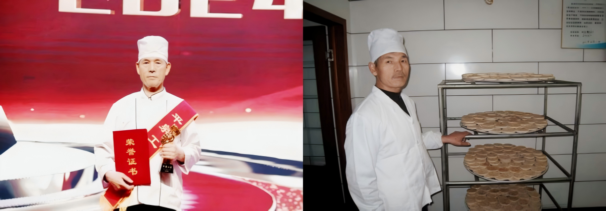
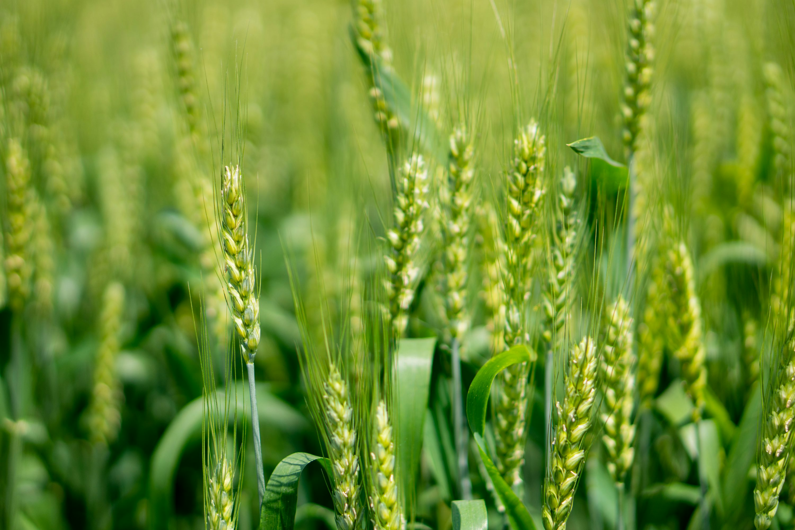
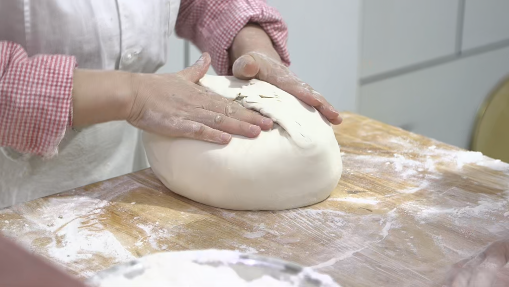

百年酥韵 · 匠心传承
从宫廷御膳到非遗瑰宝，十八道工序的坚守
清·道光年间
御膳房里的“油酥饽饽”
御厨刘德才在宫廷御膳房潜心研制，创出“水面包酥面”的绝技。酥皮薄如蝉翼，层次丰富，深得皇室喜爱，赐名“南沙酥”。

2009年
荣膺省级非遗
经过数代人的口传心授，南沙酥制作技艺被正式列入河北省非物质文化遗产名录。这不仅是一块糕点，更是承德历史文化的活化石。
今天
守正创新 · 利发糖饼厂
传承人秦连平创立“利发糖饼厂”，在坚持古法纯手工制作的同时，引入低糖健康理念。让这块三百年的宫廷点心，走入寻常百姓家。
全链路 · 品质铁律
Quality Control Process1

甄选 · 溯源
严选承德本地高筋小麦与优质水源。坚持使用天然猪板油，拒绝人造奶油。
›
2

古法 · 精制
传承非遗“水面包酥面”技艺，十八道工序纯手工制作。
›
3

毫厘 · 严检
每一批次产品均经过严格理化指标检测，确保安全卫生零容忍。
›
4

自主 · 直营
产销一体化管理。从非遗工坊直接送达消费者手中，传递最新鲜的宫廷酥香。